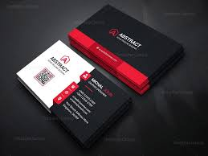

Our Categories
We offer top-notch services tailored to your needs

Websites
Custom-designed websites for businesses and events.
Logos
Creative logos to establish your brand identity.
Posters
Engaging posters to captivate your audience.

Visiting Cards
Professional visiting cards to leave a lasting impression.